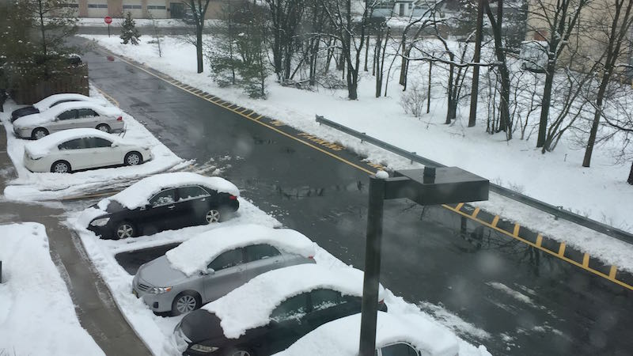

<!DOCTYPE html>
<html>
<head>
  <title>Winter Photographs</title>
  <link rel="stylesheet" type="text/css" href="css/style.css">
  <link rel="stylesheet" type="text/css" href="slick/slick.css">
</head>

<body>
  <script src="https://ajax.googleapis.com/ajax/libs/jquery/2.1.3/jquery.min.js">
  </script>
  <script type="text/javascript" src="js/script.js"></script>
  <script type="text/javascript" src="js/slick.js"></script>
 </body>
 <div class="center">
    <div></div> 
    <div></div>
    <div></div>
    <div></div>
    <div></div>
  </div>
  <script>
$('.center').slick({
  centerMode: true,
  centerPadding: '60px',
  slidesToShow: 3,
  responsive: [
    {
      breakpoint: 768,
      settings: {
        arrows: false,
        centerMode: true,
        centerPadding: '40px',
        slidesToShow: 3
      }
    },
    {
      breakpoint: 480,
      settings: {
        arrows: false,
        centerMode: true,
        centerPadding: '40px',
        slidesToShow: 1
      }
    }
  ]
});
  </script>
</html>